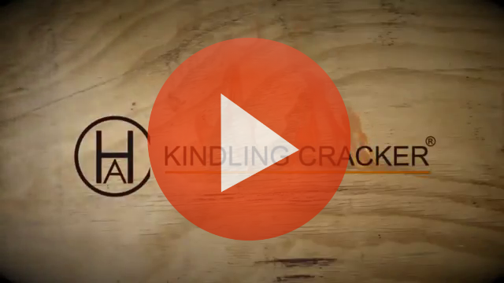

SOLUTION
“Kindling Cracker is in production and selling through the website kindlingcracker.com. The journey doesn’t end here, it’s just beginning. Everyone in the world needs to know there is a way they can cut kindling without hurting themselves! I know now a good idea is the easy part, you have to keep working it, testing it, and what ever happens, don’t give up!”